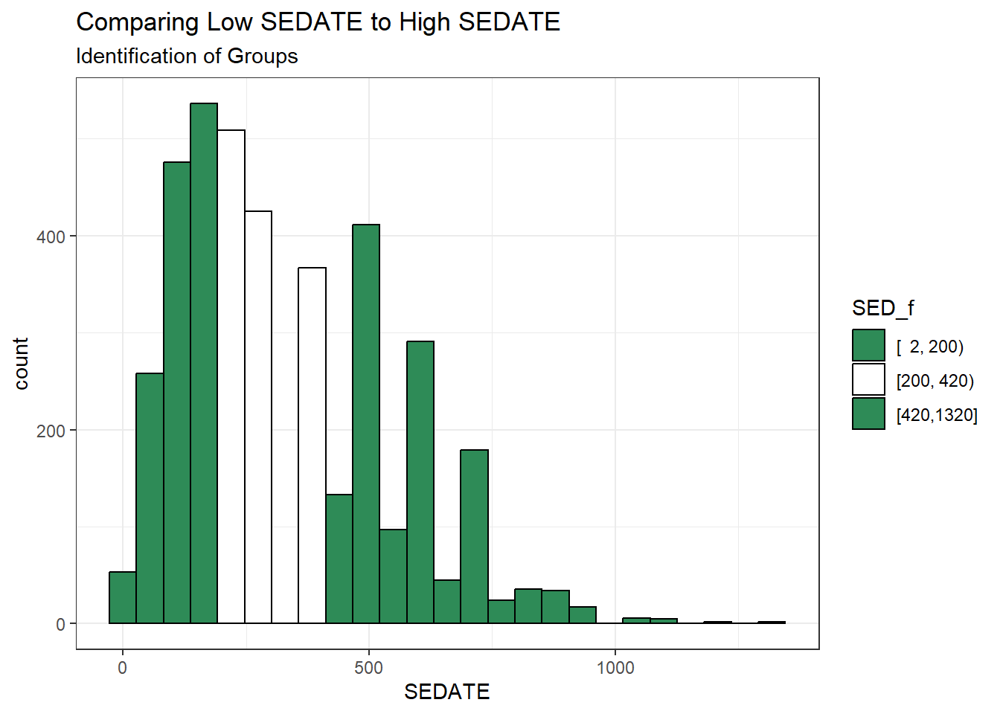
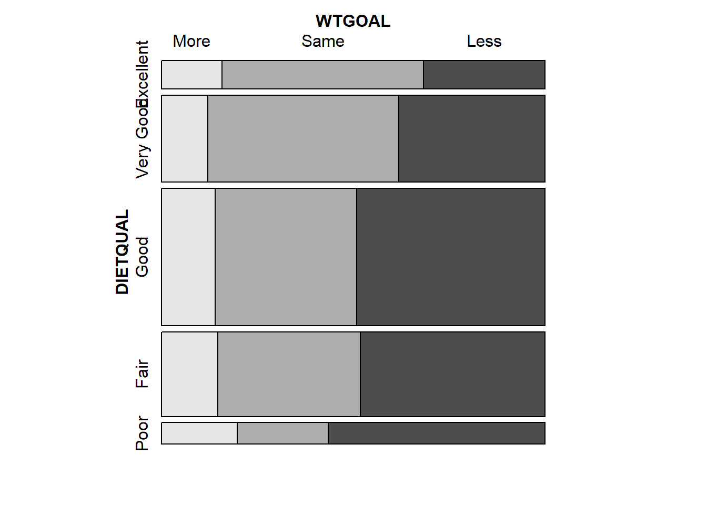
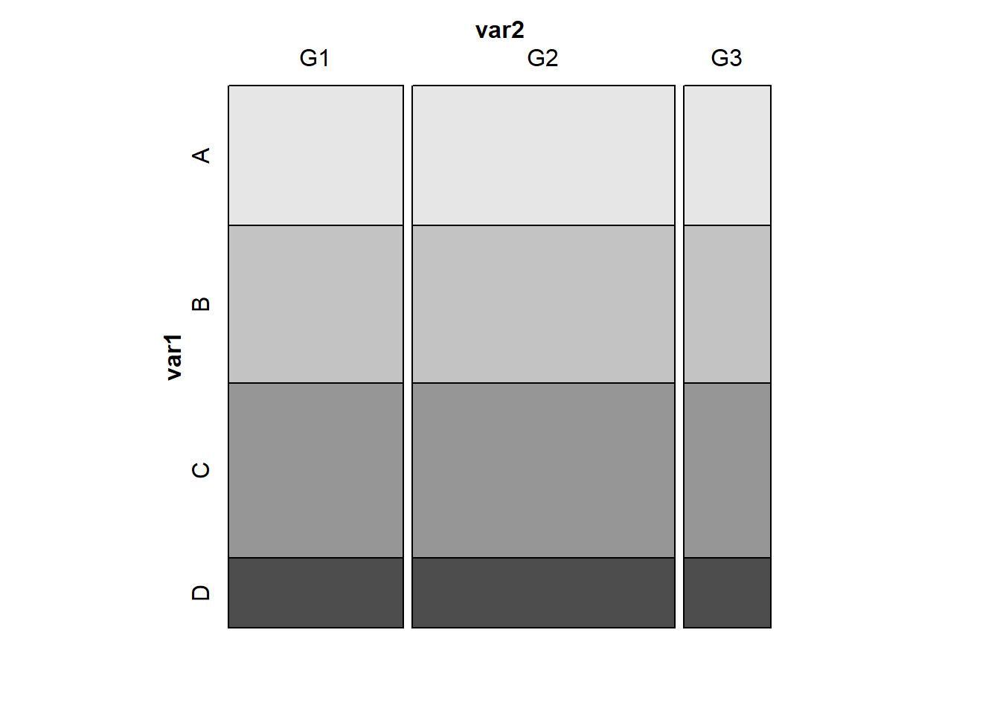
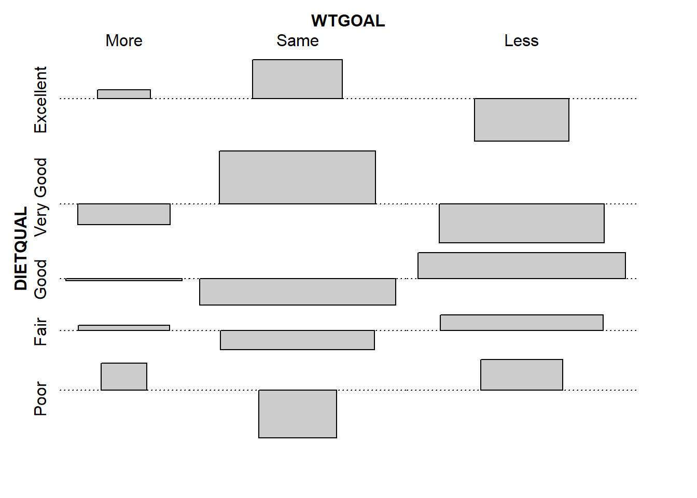
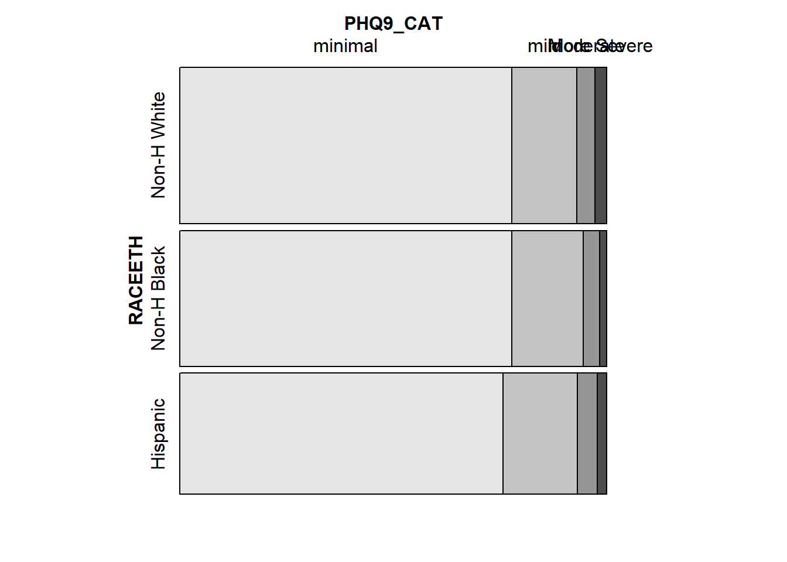
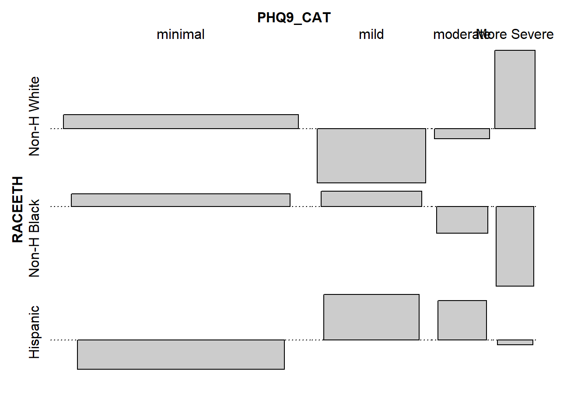

knitr::opts_chunk$set(comment = NA)
library(janitor)
library(broom)
library(DescTools)
library(Epi)
library(gt)
library(Hmisc)
library(vcd)
library(tidyverse)
theme_set(theme_bw())4 431 Review: Comparing Rates
In this Chapter, we will review some key issues about comparing proportions or rates, mostly drawn from the 431 course. This and the other Chapters labeled “431 Review” show elements of the two studies involved in a “431 Project B” using the pre-pandemic (2017 - March 2020) data from the National Health and Nutrition Examination Survey (NHANES) called nh432 that we developed in Chapter 1 and then summarized in Chapter 2. Note that we’ll ignore the issue of sampling weights and assume a “missing completely at random” (MCAR) mechanism in these “431 Review” chapters, so that we can work with complete cases.
The 431 course notes are at https://thomaselove.github.io/431-notes/ and will remain there until 2023-06-01.
4.1 R Setup
4.1.1 Data Load
nh432 <- read_rds("data/nh432.Rds")4.2 2x2 Contingency Table: DR_LOSE and NOWLOSE
Let’s compare the probability that NOWLOSE is 1 (The subject is currently working on losing or controlling their body weight) between NHANES participants who have (vs. who have not) been told by a doctor to lose or control their weight in the past 12 months (DR_LOSE). Each of these (DR_LOSE and NOWLOSE) is stored in R as a numeric variable with non-missing values equal to 0 or 1.
temp <- nh432 |>
select(SEQN, DR_LOSE, NOW_LOSE) |>
drop_na()As with any categorical variable, we start by counting, and the natural way to display the counts of these two variables (DR_LOSE and NOW_LOSE) is in a table, rather than a graph, I think.
temp |>
tabyl(DR_LOSE, NOW_LOSE) |>
adorn_totals(where = c("row", "col")) |>
adorn_title() NOW_LOSE
DR_LOSE 0 1 Total
0 1198 1541 2739
1 246 943 1189
Total 1444 2484 3928Now that we have a 2x2 table, we could consider obtaining some more detailed summary statistics, with a tool like the twoby2() function in the Epi package. There is a problem with this, though.
twoby2(temp$DR_LOSE, temp$NOW_LOSE)2 by 2 table analysis:
------------------------------------------------------
Outcome : 0
Comparing : 0 vs. 1
0 1 P(0) 95% conf. interval
0 1198 1541 0.4374 0.4189 0.4560
1 246 943 0.2069 0.1848 0.2309
95% conf. interval
Relative Risk: 2.1140 1.8766 2.3815
Sample Odds Ratio: 2.9801 2.5412 3.4949
Conditional MLE Odds Ratio: 2.9793 2.5350 3.5096
Probability difference: 0.2305 0.2002 0.2594
Exact P-value: 0.0000
Asymptotic P-value: 0.0000
------------------------------------------------------The code runs fine, but the table isn’t really in a useful format. This table shows the probability that NOWLOSE = 0 (“No”) comparing DR_LOSE = 0 (“No”) to DR_LOSE = 1 (“Yes”), and that’s just confusing.
It would be much better if we did two things:
- used factors with meaningful labels to represent the 1/0 variables for this table
- set up the table in standard epidemiological format, and then made a better choice as to what combination should be in the top left of the 2x2 table.
So let’s do that.
4.2.1 Standard Epidemiological Format
Standard Epidemiological Format for a 2x2 table places the exposure in the rows, and the outcome in the columns, with the top left representing the combination of interest when we obtain things like an odds ratio or probability difference. Typically this means we want to put the “Yes” and “Yes” combination in the top left.
First, let’s create factor versions (with more meaningful labels than 1 and 0) out of the two variables of interest: DR_LOSE and NOW_LOSE.
dat1 <- nh432 |>
select(SEQN, DR_LOSE, NOW_LOSE) |>
drop_na() |>
mutate(DR_LOSE_f = fct_recode(factor(DR_LOSE), "Dr_said_Lose_Wt" = "1", No = "0"),
DR_LOSE_f = fct_relevel(DR_LOSE_f, "Dr_said_Lose_Wt", "No"),
NOW_LOSE_f = fct_recode(factor(NOW_LOSE), "Now_losing_Wt" = "1", No = "0"),
NOW_LOSE_f = fct_relevel(NOW_LOSE_f, "Now_losing_Wt", "No"))Note that after recoding the levels to more meaningful labels, we also re-leveled the factors so that the “Yes” result comes first rather than last.
This produces the following table, which is now in standard epidemiological format, where we are using the DR_LOSE_f information to predict NOW_LOSE_f.
dat1 |>
tabyl(DR_LOSE_f, NOW_LOSE_f) |>
adorn_totals(where = c("row", "col")) |>
adorn_title() NOW_LOSE_f
DR_LOSE_f Now_losing_Wt No Total
Dr_said_Lose_Wt 943 246 1189
No 1541 1198 2739
Total 2484 1444 3928We could, I suppose, make the table even prettier.
tab1 <- dat1 |>
tabyl(DR_LOSE_f, NOW_LOSE_f) |>
adorn_totals(where = c("row", "col"))
gt(tab1, rowname_col = "DR_LOSE_f") |>
tab_header(title = "DR_LOSE vs. NOW_LOSE",
subtitle = "Standard Epidemiological Format") |>
tab_stubhead(label = "Dr said Lose Weight?") |>
tab_spanner(label = "Currently Losing Weight?",
columns = c(Now_losing_Wt, No))| DR_LOSE vs. NOW_LOSE | |||
| Standard Epidemiological Format | |||
| Dr said Lose Weight? | Currently Losing Weight? | Total | |
|---|---|---|---|
| Now_losing_Wt | No | ||
| Dr_said_Lose_Wt | 943 | 246 | 1189 |
| No | 1541 | 1198 | 2739 |
| Total | 2484 | 1444 | 3928 |
4.2.2 Obtaining Key Summaries with twoby2()
And, finally, we can obtain necessary summaries (including estimates and confidence intervals) using the twoby2() function.
twoby2(dat1$DR_LOSE_f, dat1$NOW_LOSE_f, conf.level = 0.90)2 by 2 table analysis:
------------------------------------------------------
Outcome : Now_losing_Wt
Comparing : Dr_said_Lose_Wt vs. No
Now_losing_Wt No P(Now_losing_Wt) 90% conf. interval
Dr_said_Lose_Wt 943 246 0.7931 0.7731 0.8118
No 1541 1198 0.5626 0.5470 0.5781
90% conf. interval
Relative Risk: 1.4097 1.3586 1.4627
Sample Odds Ratio: 2.9801 2.6071 3.4065
Conditional MLE Odds Ratio: 2.9793 2.5998 3.4195
Probability difference: 0.2305 0.2052 0.2548
Exact P-value: 0.0000
Asymptotic P-value: 0.0000
------------------------------------------------------Some brief descriptions of these results:
- The probability that a participant is now losing weight (NOW_LOSE is 1) is estimated to be 0.79 (with 90% CI 0.77, 0.81) if the participant has been told to lose weight by a doctor in the past 12 months (DR_LOSE = 1), but only 0.56 (with 90% CI 0.55, 0.58) if the participant has not been told this.
- The relative risk of a participant now losing weight is estimated to be \(\frac{0.7931}{0.5626}\) = 1.41 (with 90% CI 1.36, 1.46) for a participant who has been told to lose weight vs. a participant who has not.
- The odds of a participant now losing weight are \(\frac{0.7931(1-0.5626)}{0.5626(1-0.7931)}\) = 2.98 times as high for a participant who has been told to lose weight than for one who has not, with 90% CI (2.61, 3.41).
- The difference in probability is estimated to be 0.7931 - 0.5626 = 0.2305 (90% CI: 0.21, 0.25), indicating again that the true probability of now losing weight is higher in participants who have been told to lose weight than in those who have not.
The “exact” p-value listed comes from the Fisher exact test, while the “asymptotic” p-value comes from a Pearson \(\chi^2\) (chi-squared) test. I would focus on the meaningful estimates (those with confidence intervals) in making comparisons, rather than on trying to determine “statistical significance” with the p-values.
4.3 2x2 Table: SEDATE category and NOW_EXER
Let’s now look at another example, where we compare the probability that a participant is “now exercising” (NOW_EXER = 1) on the basis of their level of sedentary activity in a typical day (collected in the SEDATE variable, in minutes.)
dat2 <- nh432 |>
select(SEQN, SEDATE, NOW_EXER) |>
drop_na()
summary(dat2 |> select(-SEQN)) SEDATE NOW_EXER
Min. : 2.0 Min. :0.0000
1st Qu.: 180.0 1st Qu.:0.0000
Median : 300.0 Median :1.0000
Mean : 332.8 Mean :0.6019
3rd Qu.: 480.0 3rd Qu.:1.0000
Max. :1320.0 Max. :1.0000 As you can see above, the information in SEDATE is quantitative, and suppose we want to compare a High SEDATE group vs. a Low SEDATE group.
4.3.1 Creating a Low and High Group on SEDATE
We can use the cut2() function from the Hmisc package to partition the data by the SEDATE variable into three groups of equal sample size. At the same time, we’ll make NOW_EXER into a more useful (for tabulation) factor with more meaningful level descriptions.
dat2 <- dat2 |>
mutate(SED_f = cut2(SEDATE, g = 3),
NOW_EXER_f = fct_recode(factor(NOW_EXER), "Now_exercising" = "1", No = "0"),
NOW_EXER_f = fct_relevel(NOW_EXER_f, "Now_exercising", "No"))As you can see, we now have three groups defined by their SEDATE values, of roughly equal sample sizes.
dat2 |> tabyl(SED_f) SED_f n percent
[ 2, 200) 1323 0.3387097
[200, 420) 1301 0.3330773
[420,1320] 1282 0.3282130The group labeled [2, 200) contains the 1323 subjects who had SEDATE values ranging from 2 up to (but not including) 200 minutes, for example.
ggplot(dat2, aes(x = SEDATE)) +
geom_histogram(aes(fill = SED_f), col = "black", bins = 25) +
scale_fill_manual(values = c("seagreen", "white", "seagreen")) +
labs(title = "Comparing Low SEDATE to High SEDATE",
subtitle = "Identification of Groups")
Now, we want to compare the Lowest SEDATE group (SED_F = [2, 200)) to the Highest SEDATE group (SED_F = [420, 1320]). To do that, we’ll drop the middle group, and then look at the cross-tabulation of our two remaining SEDATE groups with our outcome: NOW_EXER (in factor form.)
dat2 <- dat2 |>
filter(SED_f != "[200, 420)") |>
mutate(SED_f = fct_drop(SED_f))
dat2 |> tabyl(SED_f, NOW_EXER_f) SED_f Now_exercising No
[ 2, 200) 776 547
[420,1320] 789 4934.3.2 Two-by-Two Table Summaries
Let’s look at the analytic results for this table.
twoby2(dat2$SED_f, dat2$NOW_EXER_f) 2 by 2 table analysis:
------------------------------------------------------
Outcome : Now_exercising
Comparing : [ 2, 200) vs. [420,1320]
Now_exercising No P(Now_exercising) 95% conf. interval
[ 2, 200) 776 547 0.5865 0.5598 0.6128
[420,1320] 789 493 0.6154 0.5885 0.6417
95% conf. interval
Relative Risk: 0.9530 0.8952 1.0146
Sample Odds Ratio: 0.8864 0.7577 1.0371
Conditional MLE Odds Ratio: 0.8865 0.7553 1.0403
Probability difference: -0.0289 -0.0664 0.0087
Exact P-value: 0.1388
Asymptotic P-value: 0.1322
------------------------------------------------------Uh, oh. There’s a bit of a problem here now. We have the right rows and the right columns, but they’re not in the best possible order, since the estimated probability of Now Exercising for the group on top (SED = [2, 200)) is smaller than it is for the people in the high group in terms of sedentary activity As a result of this problem with ordering, our relative risk and odds ratio estimates are less than 1, and our probability difference is negative.
4.3.3 Flipping Levels
Since which exposure goes at the top is an arbitrary decision, let’s switch the factor levels in SED_f, so that the people with high sedentary activity and who are now exercising are shown in the top left cell of the table. This should flip the point estimates of the relative risk and odds ratio above 1, and the estimated probability difference to a positive number. Note the use of the fct_rev() function from the forcats package to accomplish this.
dat2 <- dat2 |>
mutate(SED_f = fct_rev(SED_f))
dat2 |> tabyl(SED_f, NOW_EXER_f) |>
adorn_totals(where = c("row", "col")) |>
adorn_title() NOW_EXER_f
SED_f Now_exercising No Total
[420,1320] 789 493 1282
[ 2, 200) 776 547 1323
Total 1565 1040 2605twoby2(dat2$SED_f, dat2$NOW_EXER_f, conf.level = 0.90)2 by 2 table analysis:
------------------------------------------------------
Outcome : Now_exercising
Comparing : [420,1320] vs. [ 2, 200)
Now_exercising No P(Now_exercising) 90% conf. interval
[420,1320] 789 493 0.6154 0.5929 0.6375
[ 2, 200) 776 547 0.5865 0.5641 0.6086
90% conf. interval
Relative Risk: 1.0493 0.9956 1.1059
Sample Odds Ratio: 1.1281 0.9889 1.2869
Conditional MLE Odds Ratio: 1.1281 0.9858 1.2910
Probability difference: 0.0289 -0.0027 0.0604
Exact P-value: 0.1388
Asymptotic P-value: 0.1322
------------------------------------------------------We conclude now that the participants who were in the high SEDATION group (as compared to those in the low SEDATION group) had:
- a relative risk of 1.05 (90% CI: 0.995, 1.106) for Now exercising,
- a sample odds ratio of 1.13 (90% CI: 0.989, 1.287) for Now exercising,
- and probability for Now exercising that was 0.029 higher (-0.003, 0.060) than for those in the low SEDATION group.
4.4 A Larger (5x3) 2-Way Table: DIETQUAL and WTGOAL in Lighter Men
Here, we’ll look at Male participants who weighed less than 100 kg (approximately 220 pounds) and ask whether their DIETQUAL (diet quality: self-rated as Excellent to poor in 5 categories) response is associated with their response to WTGOAL (would you like to weigh more, about the same, or less than you do now: 3 categories.)
The resulting two-way contingency table includes 5 rows and 3 columns. We are interested in evaluating the relationship between the rows and the columns. It’s called a two-way table because there are two categorical variables (DIETQUAL and WTGOAL) under study.
If the rows and columns were found to be independent of one another, this would mean that the probabilities of falling in each column do not change, regardless of what row of the table we look at.
If the rows and columns are associated, then the probabilities of falling in each column do depend on which row we’re looking at.
dat3 <- nh432 |>
select(SEQN, DIETQUAL, WTGOAL, WEIGHT, SEX) |>
filter(WEIGHT < 100 & SEX == "Male") |>
drop_na()
dat3 |>
tabyl(DIETQUAL, WTGOAL) DIETQUAL More Same Less
Excellent 16 53 32
Very Good 37 153 117
Good 68 179 238
Fair 44 111 144
Poor 15 18 43If we want a graphical representation of a two-way table, the most common choice is probably a mosaic plot.
vcd::mosaic(~ DIETQUAL + WTGOAL, data = dat3,
highlighting = "WTGOAL")
Larger observed frequencies in the contingency table show up with larger tile areas in the in the mosaic plot. So, for instance, we see the larger proportion of “less” WTGOAL in the “Poor” DIETQUAL category, as compared to most of the other DIETQUAL categories.
4.4.1 What would independence look like?
A mosaic plot displaying perfect independence (using simulated data) might look something like this:
var1 <- c(rep("A", 48), rep("B", 54), rep("C", 60), rep("D", 24) )
var2 <- c( rep(c("G1", "G1", "G2", "G2", "G2", "G3"), 31) )
temp_tab <- tibble(var1, var2); rm(var1, var2)
vcd::mosaic(~ var1 + var2, data = temp_tab, highlighting = "var1")
Here’s the table for our simulated data, where independence holds perfectly.
xtabs(~ var1 + var2, data = temp_tab) var2
var1 G1 G2 G3
A 16 24 8
B 18 27 9
C 20 30 10
D 8 12 4Note that in these simulated data, we have the same fraction of people in each of the four var1 categories (A, B, C, and D) regardless of which of the three var2 categories (G1, G2 and G3) we are in, and vice versa. That’s what it means for rows and columns to be independent.
4.4.2 Back to the DIETQUAL and WTGOAL table
Now, returning to our problem, to obtain detailed results from the Pearson \(\chi^2\) test, I use the xtabs() function and then the chisq.test() function, like this:
chi3 <- chisq.test(xtabs(~ DIETQUAL + WTGOAL, data = dat3))
chi3
Pearson's Chi-squared test
data: xtabs(~DIETQUAL + WTGOAL, data = dat3)
X-squared = 32.603, df = 8, p-value = 7.261e-05The null hypothesis being tested here is that DIETQUAL and WTGOAL are independent of each other. A small p value like this is indicative of an association between the two variables.
The chi3 object we have created also contains:
- the observed frequencies in each cell, as well as
- the expected frequencies under the hypothesis of independence of the rows and the columns1, and
- the Pearson residuals \((\mbox{observed - expected})/\sqrt{\mbox{expected}}\) for each cell, among other things.
chi3$observed WTGOAL
DIETQUAL More Same Less
Excellent 16 53 32
Very Good 37 153 117
Good 68 179 238
Fair 44 111 144
Poor 15 18 43chi3$expected WTGOAL
DIETQUAL More Same Less
Excellent 14.33754 40.94164 45.72082
Very Good 43.58044 124.44637 138.97319
Good 68.84858 196.60095 219.55047
Fair 42.44479 121.20347 135.35174
Poor 10.78864 30.80757 34.40379chi3$residuals # Pearson residuals WTGOAL
DIETQUAL More Same Less
Excellent 0.4390501 1.8845411 -2.0291917
Very Good -0.9968028 2.5595886 -1.8639211
Good -0.1022694 -1.2552875 1.2451396
Fair 0.2387127 -0.9268093 0.7433564
Poor 1.2821492 -2.3074805 1.4655618An association plot presents a graphical description of the Pearson residuals, with the area of each box shown proportional to the difference between the observed and expected frequencies.
- If the observed frequency of a cell is greater than the expectation under the hypothesis of independence, then the box rises above the baseline.
- An example here is the (DIETQUAL = Very Good, WTGOAL = Same) which had an observed frequency of 153 but an expected frequency of 124.4, yielding the largest positive Pearson residual at 2.56.
- Boxes shown below the baseline indicate that the observed frequency was less than the expectation under the independence hypothesis.
- The largest negative Pearson residual is the (DIETQUAL = Poor, WTGOAL = Same) cell, where we observed 18 observations but the independence model would predict 30.8, yielding a Pearson residual of -2.31.
vcd::assoc(~ DIETQUAL + WTGOAL, data = dat3)
Some people also like to calculate a correlation between categorical variables. If each of your categorical variables is ordinal (as in this case) then Kendall’s tau (version b) is probably the best choice. As with a Pearson correlation for quantities, the value for this measure ranges from -1 to 1, with -1 indicating a strong negative correlation, and +1 a strong positive correlation, with 0 indicating no correlation.
To use this approach, though, we first have to be willing to treat our multi-categorical variables as if they were numeric, which may or may not be reasonable.
dat3 <- dat3 |>
mutate(DIETQUAL_num = as.numeric(DIETQUAL))
dat3 |> tabyl(DIETQUAL_num, DIETQUAL) DIETQUAL_num Excellent Very Good Good Fair Poor
1 101 0 0 0 0
2 0 307 0 0 0
3 0 0 485 0 0
4 0 0 0 299 0
5 0 0 0 0 76dat3 <- dat3 |>
mutate(WTGOAL_num = as.numeric(WTGOAL))
dat3 |> tabyl(WTGOAL_num, WTGOAL) WTGOAL_num More Same Less
1 180 0 0
2 0 514 0
3 0 0 574cor(dat3$DIETQUAL_num, dat3$WTGOAL_num, method = "kendall")[1] 0.07193663If you want to obtain a confidence interval for this correlation coefficient, then you would need to use the KendallTauB() function from the DescTools package.
KendallTauB(dat3$DIETQUAL_num, dat3$WTGOAL_num, conf.level = 0.90) tau_b lwr.ci upr.ci
0.07193663 0.03147130 0.11240196 Again, it’s just a number, and not especially valuable.
4.5 PHQ9 Category and Race/Ethnicity
Let’s look next at the association of race-ethnicity (RACEETH, which has 5 levels) and the depression category (minimal, mild, moderate, moderately severe, or severe) available in PHQ9_CAT, which we derived from the PHQ-9 depression screener score. We’ll restrict this small analysis to NHANES participants who did not receive care from a mental health provider (so MENTALH is 0) in the last 12 months.
temp <- nh432 |>
select(SEQN, RACEETH, PHQ9_CAT, MENTALH) |>
filter(MENTALH == 0) |>
drop_na()So here’s our first attempt at a 5x5 table describing this association.
temp |>
tabyl(RACEETH, PHQ9_CAT) RACEETH minimal mild moderate moderately severe severe
Non-H White 770 151 41 20 8
Non-H Black 668 143 34 13 1
Hispanic 581 133 36 12 5
Non-H Asian 428 49 11 1 1
Other Race 105 34 12 5 1We note some very small observed frequencies, especially in the bottom right of the table. Should we try to run a Pearson \(\chi^2\) test on these results, we will generate a warning that the Chi-square approximation may be incorrect.
xtabs( ~ RACEETH + PHQ9_CAT, data = temp ) |>
chisq.test()Warning in stats::chisq.test(x, y, ...): Chi-squared approximation may be
incorrect
Pearson's Chi-squared test
data: xtabs(~RACEETH + PHQ9_CAT, data = temp)
X-squared = 49.288, df = 16, p-value = 2.974e-054.5.1 The Cochran conditions
R sets off this warning when the “Cochran conditions” are not met. The Cochran conditions require that we have:
- no cells with 0 counts
- at least 80% of the cells in our table with counts of 5 or higher
- expected counts in each cell of the table should be 5 or more
In our table, we have four cells with observed counts below 5 (all have count 1) and two more with observed counts of exactly 5. If we look at the expected frequencies under the hypothesis of independence, what do we see?
temp_chi <- xtabs( ~ RACEETH + PHQ9_CAT, data = temp ) |>
chisq.test()Warning in stats::chisq.test(x, y, ...): Chi-squared approximation may be
incorrecttemp_chi$expected PHQ9_CAT
RACEETH minimal mild moderate moderately severe severe
Non-H White 774.2813 154.73491 40.655838 15.473491 4.8544284
Non-H Black 671.8259 134.25988 35.276126 13.425988 4.2120748
Hispanic 599.8725 119.88048 31.498008 11.988048 3.7609562
Non-H Asian 383.2302 76.58596 20.122587 7.658596 2.4026969
Other Race 122.7901 24.53877 6.447441 2.453877 0.7698437Every cell in the “severe” category has an expected frequency below 5, and we also have some generally small counts, in the Non-Hispanic Asian and Other Race categories, as well as the “moderately severe” category.
4.5.2 Collapsing Categories
So what might we do about this?
Let us consider two approaches that we’ll use simultaneously:
- drop two of the RACEETH groups, and just use the top 3 (Non-H White, Non-H Black and Hispanic) using
filter() - collapse together the two right-most levels of PHQ9_CAT (moderately severe and severe) into a new level which I’ll call “More Severe”, using
fct_lump_n()
dat5 <- nh432 |>
select(SEQN, RACEETH, PHQ9_CAT, MENTALH) |>
filter(MENTALH == 0) |>
filter(RACEETH %in% c("Non-H White", "Non-H Black", "Hispanic")) |>
drop_na() |>
mutate(RACEETH = fct_drop(RACEETH),
PHQ9_CAT = fct_lump_n(PHQ9_CAT, 3,
other_level = "More Severe"))
dat5 |>
tabyl(RACEETH, PHQ9_CAT) RACEETH minimal mild moderate More Severe
Non-H White 770 151 41 28
Non-H Black 668 143 34 14
Hispanic 581 133 36 17Now, we have at least 14 participants in every cell of the table.
4.5.3 Pearson \(\chi^2\) Analysis
Now, let’s consider what the Pearson \(\chi^2\) test suggests.
tab5 <- xtabs(~ RACEETH + PHQ9_CAT, data = dat5)
tab5 PHQ9_CAT
RACEETH minimal mild moderate More Severe
Non-H White 770 151 41 28
Non-H Black 668 143 34 14
Hispanic 581 133 36 17chisq.test(tab5)
Pearson's Chi-squared test
data: tab5
X-squared = 5.0157, df = 6, p-value = 0.5418Now we have no warning, and notice also how large a change this has meant in terms of the p-value, as compared to our original \(\chi^2\) result.
4.5.4 Mosaic Plot
Here’s a mosaic plot2 of the table.
vcd::mosaic(tab5, highlighting = "PHQ9_CAT")
4.5.5 Examining the Fit
We’ll finish up with a look at the expected frequencies, and a table and association plot of the Pearson residuals.
chisq.test(tab5)$observed PHQ9_CAT
RACEETH minimal mild moderate More Severe
Non-H White 770 151 41 28
Non-H Black 668 143 34 14
Hispanic 581 133 36 17chisq.test(tab5)$expected PHQ9_CAT
RACEETH minimal mild moderate More Severe
Non-H White 764.0711 161.5940 42.00688 22.32798
Non-H Black 662.9667 140.2114 36.44839 19.37347
Hispanic 591.9622 125.1946 32.54472 17.29855chisq.test(tab5)$residuals PHQ9_CAT
RACEETH minimal mild moderate More Severe
Non-H White 0.21449006 -0.83339100 -0.15535235 1.20036381
Non-H Black 0.19548040 0.23550271 -0.40554793 -1.22081874
Hispanic -0.45055624 0.69759600 0.60567876 -0.07178083assoc(tab5)
The expected frequency for a call under independence is the total for the cell’s row multiplied by the total for the cell’s column, divided by the grand total for the whole table.↩︎
The ggmosaic package has a
geom_mosaic()tool for building such plots but its maintenance has been spotty in recent weeks.↩︎